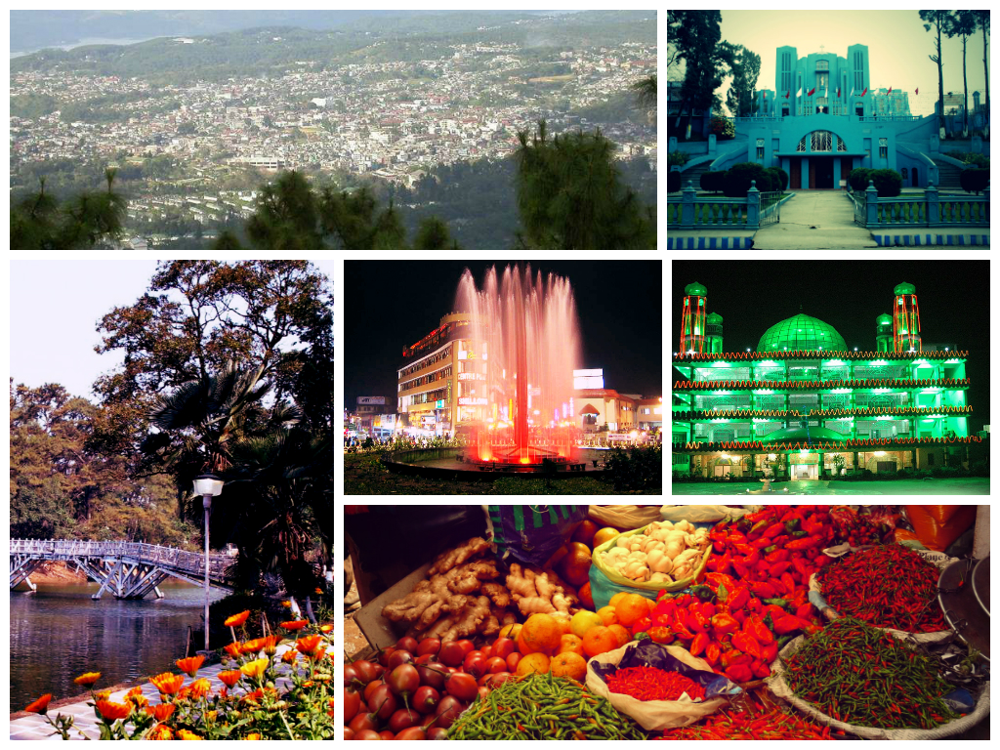

Meghalaya is a hilly state in northeastern India.
The name means "the abode of clouds" in Sanskrit.
The population of Meghalaya as of 2016 is estimated
to be 3,211,474. Meghalaya covers an area of approximately
22,430 square kilometres, with a length to breadth ratio of about 3:1.
Capital: Shillong
Governor: Tathagata Roy
Chief minister: Conrad Sangma
Formation: 21 January 1972

Climate
The climate of Meghalaya varies with the altitude.
It is neither too warm in summer nor too cold in
winter, but over the plains of Garo Hills, the climate is warm and humid,
except in winter. True to its name, the Meghalaya sky seldom remains
free of clouds. The average annual rainfall is about 1,150 cm.
Best time to visit
Often called the abode of clouds, the best time to visit Meghalaya is between October and June.
Most tourist destinations in the state receive temperatures that rarely go beyond 30½ C,
making it a perfect escape between March and June which is the summer season in the country.
How can you reach Meghalaya?
Meghalaya Transport Corporation (MTC) is well connected to several cities
within the state as well as neighbouring states. The highway that connects Guwahati to Shillong is NH40
and it is well-maintained and easy to navigate. If you want to go sightseeing, then you can book a cab to take you around .
Click to go Back to Home